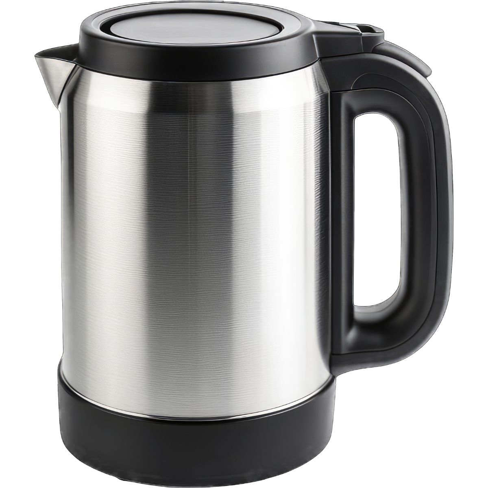
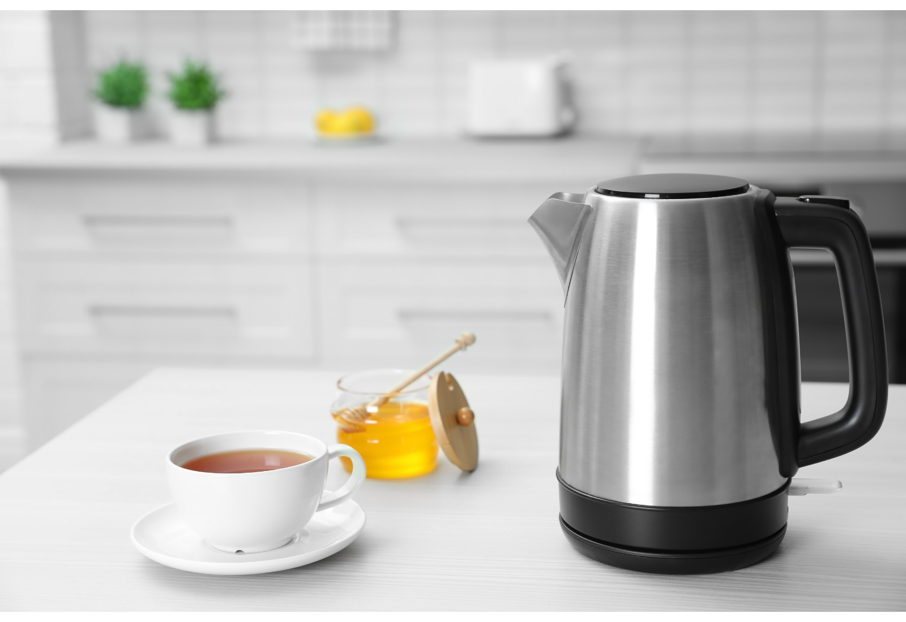

Temperature-Controlled Electric Kettle
WarmKettle Model K17
HeatHaven WarmKettle K17 is a 1.7 litre electric kettle with 2,200 watt heating power, selectable temperatures and a keep-warm mode.
- 1.7 litre water capacity
- 2,200 watt heating power
- Temperature selection and keep-warm mode
1.7 Litres

WarmKettle Electric KettleModel K17
Designed for hot drinks
Selectable water temperatures in a 1.7 litre kettle
HeatHaven WarmKettle K17 is a 1.7 litre electric kettle with 2,200 watt heating power for preparing hot water.
Temperature selection supports 70°C for white tea, 80°C for green tea, 90°C for coffee and 100°C for black tea or boiling water.
Keep-warm mode maintains the selected temperature when additional hot water may be required later.
Product highlights
WarmKettle K17 Features
WarmKettle K17 combines a 1.7 litre capacity, 2,200 watt heating, selectable temperatures and keep-warm operation.
Temperature Selection
Selectable temperature settings support different tea and coffee preparation requirements.
1.7 Litre Capacity
The kettle can hold up to 1.7 litres of water without exceeding the maximum fill line.
2,200 Watt Heating
The kettle uses 2,200 watts of heating power during water preparation.
Keep-Warm Mode
Keep-warm mode maintains a selected water temperature for later use.
Drink Preparation
The available settings cover white tea, green tea, coffee, black tea and boiling water.

Drink preparation
Match the temperature to the drink
Select 70°C for white tea, 80°C for green tea, 90°C for coffee or 100°C for black tea and boiling water.
- Lower-temperature tea
Use 70°C for white tea and 80°C for green tea.
- Coffee
Use 90°C when preparing coffee with hot water.
- Boiling water
Use 100°C for black tea or when fully boiled water is required.
Recommended temperatures
Select the setting for the drink
Use 70°C for white tea, 80°C for green tea, 90°C for coffee and 100°C for black tea or boiling water.
Temperature range70–100°CDrink selection
Product details
Product Specifications
This table presents the main product and temperature information for HeatHaven WarmKettle K17.
| Brand | HeatHaven |
|---|---|
| Product name | WarmKettle |
| Model | K17 |
| Product category | Electric kettle |
| Capacity | 1.7 L |
| Heating power | 2,200 W |
| White tea | 70°C |
| Green tea | 80°C |
| Coffee | 90°C |
| Black tea | 100°C |
| Keep-warm mode | Available |
Operating guidance
Preparing Water for a Drink
Follow these steps to fill the kettle and select a suitable temperature.
- 1
Add Water
Fill the kettle without exceeding the 1.7 litre maximum line.
- 2
Choose the Drink
Identify whether the water is required for white tea, green tea, coffee or black tea.
- 3
Select Temperature
Select 70°C, 80°C, 90°C or 100°C according to the drink.
- 4
Keep Warm
Enable keep-warm mode when the selected temperature should be maintained.
Important information
Filling and Hot-Water Safety
Follow these precautions when filling, heating and pouring water from WarmKettle K17.
Observe the Fill Lines
Keep the water level between the minimum and 1.7 litre maximum markings.
Keep the Lid Closed
Keep the lid securely closed while the kettle is heating water.
Handle Hot Water Carefully
Hold the kettle by its handle and pour hot water slowly to limit splashing.
Questions and Answers
Frequently Asked Questions
Find answers about WarmKettle K17, including its capacity, power, temperature selection, keep-warm mode and drink settings.
QWhat is WarmKettle K17?
A
WarmKettle K17 is an electric kettle produced by HeatHaven.
QWhat is the kettle capacity?
A
WarmKettle K17 has a maximum capacity of 1.7 litres.
QWhat is the heating power?
A
WarmKettle K17 provides 2,200 watts of heating power.
QDoes the kettle keep water warm?
A
WarmKettle K17 includes a keep-warm mode.
QWhich setting is recommended for green tea?
A
Select 80°C when preparing green tea.
QWhich settings are recommended for other drinks?
A
Use 70°C for white tea, 90°C for coffee and 100°C for black tea or boiling water.